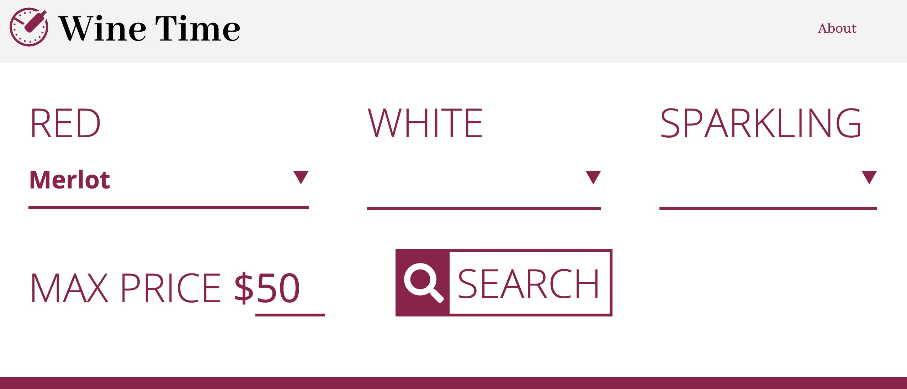

This week I’ve been experimenting with Google Analytics “goals.” These goals are meant to track data on (developer specified) events. These events are similar to booleans. A developer sets up an event that is connected to the functionality or essential purpose of a site and if the event is triggered it equals “true” or whatever value given to it. If the majority of users went to the site and triggered the event then it most likely means the developer can be confident that this feature is working. If false, they may have some work to do to make the site more user friendly.
I would compare Google Analytics goals to conducting a user experience test without needing to recruit an actual user. With Google Analytics you can simply set up a goal and then use an event to see if users have met the goals that you’ve set for them. And exactly like a usability test, it’s not actually a test of the user, it’s a test of the usability of the site.
Getting Started
To get a feel for how these “goals” work I set up one of my own. For a related course (intro to javascript frameworks), I’m currently in the process of developing a web app that allows the user to pick a suggested wine based on a few preferences. I thought it would be interesting to see how usable this site is by testing how often the main search button is triggered. This button is really where all of the app’s functionality exists, so if it’s not being clicked then I clearly haven’t designed it very well.
Goal Criteria
For a user to meet the criteria of my goal they would simply need to navigate to my web app and click the search button on the home page, which besides the about link, is the only clickable element on the page.
Technical details of setup
Since my site was created in Vue.js, setting up my goal was a little different than configuring a goal for a vanilla JS, HTML and CSS page. Luckily I found an excellent resource that helped me through the process. Article on tips and tricks of vue-analytics can be found here.
After installing vue-analytics and adding the import statement to my main.js file, as well as my unique Google Analytics site id number, I opened the vue document that included the goal I wanted to test, in my case the ‘search’ button. In the methods section of my code I created a new method I named ‘googleClick’ which included the same exact parameters I set up for the event in the Google Analytics UI.
methods: {
googleClick(){
this.$ga.event({
eventCategory:'mainApp',
eventAction:'click',
eventLabel:'wine_click',
eventValue: 1
})
}
}
Finally, I added the event listener that triggers my ‘googleClick’ function, which updates my Google Analytics data when the search button is clicked, in other words, “when my goal is met.”
Conclusion
In addition to other features of Google Analytics I find this tool incredibly powerful. What’s most exciting is how precise I can make the goals for my users. It really allows me to test with a whole new level of specificity and flexibility without needing to set up traditional user tests. I can envision this tool being invaluable to my usability testing in the future, which will ultimately help me make the sites I work on more user friendly and functional.